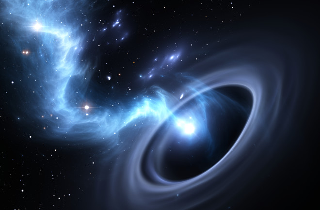
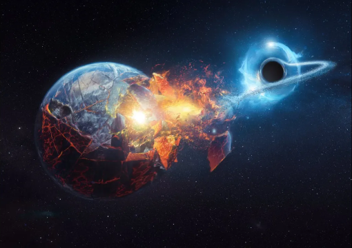

How Big Are Black Holes?
Black holes can be big or small. Scientists think the smallest black holes are as small as just one atom. These black
holes are very tiny but have the mass of a large mountain. Mass is the amount of matter, or "stuff," in an object.
Another kind of black hole is called "stellar." Its mass can be up to 20 times more than the mass of the sun. There may
be many, many stellar mass black holes in Earth's galaxy. Earth's galaxy is called the Milky Way.
The largest black holes are called "supermassive." These black holes have masses that are more than 1 million suns
together. Scientists have found proof that every large galaxy contains a supermassive black hole at its center. The
supermassive black hole at the center of the Milky Way galaxy is called Sagittarius A. It has a mass equal to about 4
million suns and would fit inside a very large ball that could hold a few million Earths.
How Do Black Holes Form?
Scientists think the smallest black holes formed when the universe began.
Stellar black holes are made when the center of a very big star falls in upon itself, or collapses. When this happens,
it causes a supernova. A supernova is an exploding star that blasts part of the star into space.
Scientists think supermassive black holes were made at the same time as the galaxy they are in.

If Black Holes Are "Black," How Do Scientists Know They Are There?
A black hole can not be seen because strong gravity pulls all of the light into the middle of the black hole. But
scientists can see how the strong gravity affects the stars and gas around the black hole. Scientists can study stars to
find out if they are flying around, or orbiting, a black hole.
When a black hole and a star are close together, high-energy light is made. This kind of light can not be seen with
human eyes. Scientists use satellites and telescopes in space to see the high-energy light.
Could a Black Hole Destroy Earth?
Black holes do not go around in space eating stars, moons and planets. Earth will not fall into a black hole because no
black hole is close enough to the solar system for Earth to do that.
Even if a black hole the same mass as the sun were to take the place of the sun, Earth still would not fall in. The
black hole would have the same gravity as the sun. Earth and the other planets would orbit the black hole as they orbit
the sun now.
The sun will never turn into a black hole. The sun is not a big enough star to make a black hole.

How Is NASA Studying Black Holes?
No light of any kind, including X-rays, can escape from inside the event horizon of a black hole, the region beyond
which there is no return. NASA's telescopes that study black holes are looking at the surrounding environments of the
black holes, where there is material very close to the event horizon. Matter is heated to millions of degrees as it is
pulled toward the black hole, so it glows in X-rays. The immense gravity of black holes also distorts space itself, so
it is possible to see the influence of an invisible gravitational pull on stars and other objects.